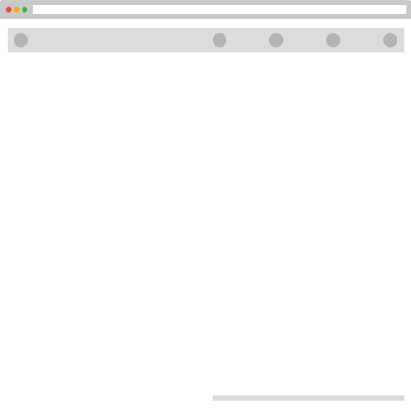
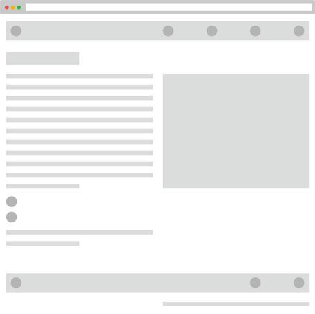

Studiowangfei.com v1.0
Overview
After deciding to have a website as the space for my projects, I tried some online portfolio frameworks such as Squarespace and Wix. They are good in general, but not great when you want standardization and customization at the same time. So I decided to build my own site to fulfill two things:
After quickly trying several JS-based and HTML-based libraries and tools, I decided to go with React.js, bootstrap and JSON, and the main idea was to go bottom-up and build everything from basic components. The developing flow is Sublime -> Git -> GitHub -> Heroku. Special thanks to Shengmin for bringing me to this fast and seamless workflow.
1. The framework is standardized for all projects to keep them consistent, but also customized to best serve unique project features and interactives.
2. All datasets are independent and projects can be updated through data.
After quickly trying several JS-based and HTML-based libraries and tools, I decided to go with React.js, bootstrap and JSON, and the main idea was to go bottom-up and build everything from basic components. The developing flow is Sublime -> Git -> GitHub -> Heroku. Special thanks to Shengmin for bringing me to this fast and seamless workflow.
Meta components.
Standard and customizable.
Standard and customizable.
I started with building very basic components, which played as host containers for different formats of content (text, image, button, video, map etc.). Each component was flexible adapting to its content and responsive to the change of browsing environment.
Basic pages.
Index and project.
Index and project.
Using the basic components, I then composed two page typologies. One served as the skeleton for index pages at 1.x level, and the other for project pages at 1.1.x level.
1.x Index Page
1.1.x Project Page

Index pages, customized.
By feeding data into the basic components and introducing more components for particular content, index page was customized into four particular web pages as Project, About, Blog and Contact.
Project pages, featurized.
For each project page, the design started with several standard components that provided an overview of the project, then another level of highly customized components were introduced to create various interactive features. This framework can quickly add a new project by just setting up the reusable component containers and hooking them with the new data, and the new feature components can be built independently and dropped in when necessary.